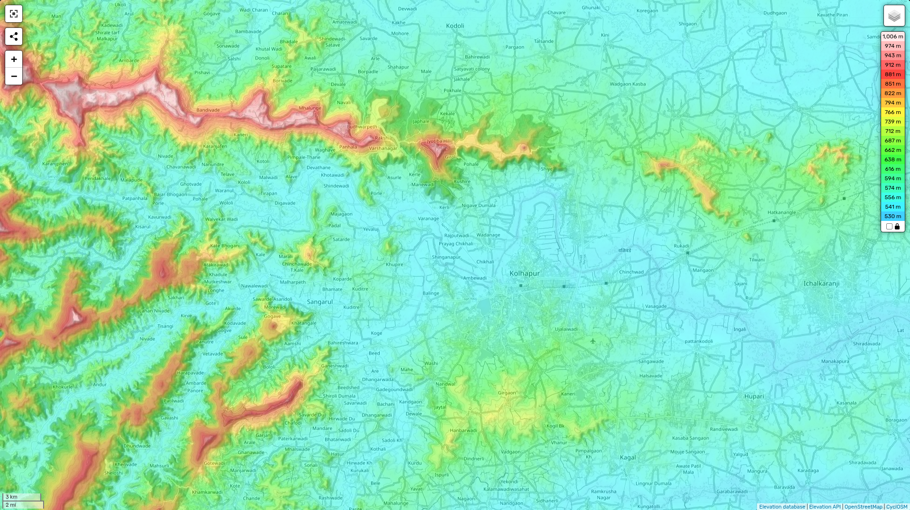

🌟 Overview
Kolhapur, situated on the banks of the Panchganga River in southern Maharashtra, is one of the most significant cultural and historic cities of the region. Often referred to as Dakshin Kashi (Kashi of the South) or Mahateerth, it is known for its spiritual heritage, vibrant culture, and unique cuisine. The city’s identity is also tied to its famous crafts, especially the Kolhapuri chappals, which were awarded Geographical Indication (GI) status in 2019. Kolhapur has played an important role as a religious center, princely state, and cultural hub in Indian history.
🏛️ Historical Background & Etymology
Kolhapur’s origins trace back to mythology and early history. In Hindu legend, the city is named after Kolhasur, a demon slain by Goddess Mahalaxmi (Ambabai). His dying wish was to have the city named after him — hence Kolha + pur (city of Kolha). Scriptural references, including the Devi-Bhagavata Purana, describe Kolhapur (Kollapura) as the permanent abode of the goddess. Stone inscriptions from the Shilahara dynasty (8th–12th century CE) refer to the city as Kshullakpur and Kalapuri, emphasizing its carved temples and Jain influence. Over the centuries, the city has been known by several names: Kollagiri, Kolladigiripattan, Kollpur, and Kuntal (around 2 CE), all linked to its valley geography and spiritual importance.
History of Kolhapur
🏛️ Ancient Period
Kolhapur is referred to as Karuvir or Dakshin Kashi in Hindu mythology. The Skanda Purana describes Kolhapur as the abode of Goddess Mahalaxmi (Ambabai), making it a major religious center since ancient times. Archaeological findings suggest Kolhapur’s civilization dates back to at least 200 BCE, with evidence of trade and settlements. The city was an important stop on the ancient trade routes that connected coastal Konkan ports with the Deccan Plateau.
⚔️ Medieval Era
Under the Shilahara Dynasty (940–1212 CE), Kolhapur rose to prominence as a capital city. Rulers like Gandaraditya Shilahara contributed to temple construction, including portions of the Mahalaxmi Temple. Later, the Yadavas of Devagiri (12th–13th century CE), under kings like Singhana II, brought Kolhapur under their influence. During expansions of the Delhi Sultanate and Bahmani Sultanate, Kolhapur remained a contested but culturally resilient city, guarded by local chieftains and temple authorities.
🦁 Maratha Period
In the 17th century, Kolhapur gained importance under Chhatrapati Shivaji Maharaj, who often used Panhala Fort as a strategic stronghold. The legendary Baji Prabhu Deshpande fought the heroic Battle of Pavan Khind (1660) near Kolhapur, securing Shivaji’s escape. After Shivaji’s death, succession disputes created two royal seats: Satara (main line of Shivaji) and Kolhapur (younger branch of the Bhosale dynasty). In 1710, Kolhapur State was formally established as a Maratha princely state, led by descendants like Chhatrapati Shahu I of Kolhapur.
👑 Shahu Maharaj & Reforms
The most celebrated ruler of Kolhapur was Chhatrapati Rajarshi Shahu Maharaj (1874–1922). He became a pioneer of social justice, free education, and upliftment of marginalized communities. He was influenced by reformers like Jyotirao Phule, and in turn, inspired later leaders such as Dr. B.R. Ambedkar. Shahu Maharaj also popularized wrestling (Kushti) and supported industrialization, leaving a permanent mark on Kolhapur’s progressive identity.
🇮🇳 Colonial & Modern Era
During British rule, Kolhapur remained a princely state under the Bhosale dynasty, allied with the Crown but internally autonomous. Leaders like Chhatrapati Shahaji II (1874–1922, contemporary with Rajarshi Shahu) maintained royal traditions alongside reforms. After India’s independence in 1947, Kolhapur merged into the Indian Union. With the formation of Maharashtra in 1960, Kolhapur became a district headquarters and grew into a hub for sugar production, automobile industries, wrestling, and arts.
👑 Kolhapur State & Modern History
In 1707, amidst a Maratha succession dispute, Tarabai established the Kolhapur State, giving rise to a separate royal line of the Bhosales. Later rulers included the visionary Chhatrapati Rajarshi Shahu Maharaj (1874–1922), who pioneered social reforms, free education, and the fight against untouchability, shaping Kolhapur’s modern identity. The princely state was annexed by the British in the 19th century but retained partial autonomy. After India’s independence in 1947, the Maharaja of Kolhapur acceded to the Indian Union on 14 August 1947, and by 1949, it was merged into Bombay State. With the creation of Maharashtra in 1960, Kolhapur became a district headquarters.

📜 Scriptural & Cultural Significance
Kolhapur holds a special place in Hindu scriptures. The Devi Gita within the Devi-Bhagavata Purana mentions Kollapura as a sacred land where Goddess Ambabai eternally resides. This spiritual aura has earned Kolhapur its title of Dakshin Kashi. Over time, the city also became a hub of Marathi theatre, wrestling (Kushti), jewelry-making, leather crafts, and the Marathi film industry, blending tradition with modernity.
🌍 Geography
Kolhapur lies in the Sahyadri ranges of the Western Ghats, at an elevation of 569 m (1,867 ft). It is strategically located — 385 km south of Mumbai, 237 km south of Pune, and 114 km north of Belgaum. Nearby attractions include Panhala Fort (21 km), Jyotiba Temple (19 km), and wildlife-rich areas like Radhanagari and Dajipur sanctuaries. The Tambraparni, Radhanagari, and Kalambawadi dams serve as important water sources, while the Panchganga River enriches the city’s fertile lands.
